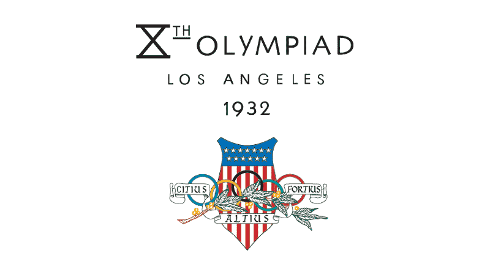

The Olympics. One of the most famous events in the world, whose name recalls years of practice
and weighty cultural significance dates back to 776 BC, where they were help in Athens, Greece,
almost 3000 years ago.

The modern Olympic Games as we know them, however, were first held in 1896, though still in
Athens, and brought together 14 nations. Although at the time, a far cry from the behemoth
we recognize the Games as today, they have increased exponentially in size, participation, and relevance.
The Olympic Games have increasingly become an international event.
Despite drops in athlete participation, nation participation has steadily grown.
Explore this relationship by brushing on the left graph to see how nation participation steady increases
* Note that the sudden drop in 1980 was due to nations boycotting the games, that year held in the Soviet Union, in protest of the Soviet-Afghan War.
To gain a better outlook on what nations were involved each Summer Olympic Games,
choose a year and have the globe identify the nations.
Select the Year of the Summer Olympics
Reminder: While the Olympics were scheduled in 1916, 1940, and 1944 they did not take place due to WWI and WWII.
Olympic Games
Host City
Number of Nations
Number of Athletes
<
The United States, Russia, and Germany hold the top 3 spots for
the most Summer Olympic medals won, particularly due to their long history of
participating in the Games
Claiming medals for one's country is more contentious than ever, with
countries such as China investing heavily in having a strong athletic
presence on the world stage.
The Olympics have expanded to encompass many different types of events and athletes. One of the oldest games were athletics, such as track and field, while one of the newest is triathlon.
Pick and choose your favorite events to see how their age compares.
However, when acknowledging the power and position that the Olympic Games holds in the cultural
zeitgeist, we must also investigate what it accomplishes with that power. With it, does it
acknowledge the people that its five rings aims to represent, people across the globe
and on every continent?
Investigating how representative the games are is a large task, so we’ve decided to just focus on how
the Games have represented female athletes over time.
Representation of Sexes Over the Years
Click on each area graph to view the trend; pick years to focus on with the timeline!
Today, female olympians are becoming more and more represented. Below are the countries with the most female olympians
Select the Year of the Summer Olympics
This increasing representation heralds a time of female athletic domination. Hover over the circles to learn about the women who dominated their fields and forged pathways for those that followed.
Conclusion
The Olympics hold a long and historic place in international culture. It's important, therefore, that they become and remain as representative and inclusive of the cultures that it aims to represent. Our analysis has shown remarkable change towards this goal, and, possibily, indicates a hopeful trend towards representativeness and equity.